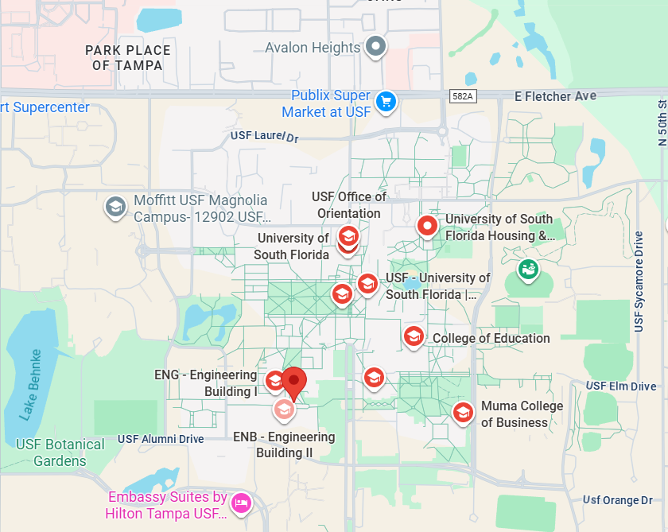

Contact
Start a conversation with CIRO.
For general questions about the laboratory, research collaboration, or student opportunities, contact Dr. Andrea D’Ambrosio.
dambrosioa@usf.edu
Department of Mechanical & Aerospace Engineering
University of South Florida
Office: ENC 2510
4202 E. Fowler Avenue
Tampa, FL 33620
